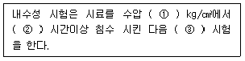
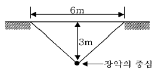
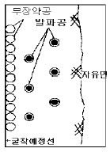
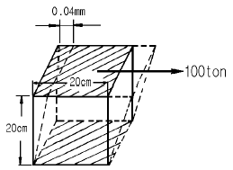
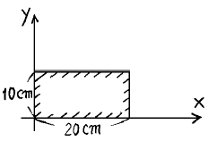
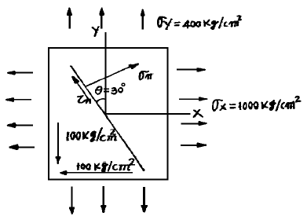
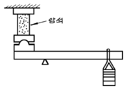

화약류관리산업기사 (2004-05-23 기출문제)
1과목: 일반화약학
1. 혼합 다이너마이트 중 니트로글리세린을 질산나트륨과 톱밥 등의 활성흡착제에 혼합한 반교질상의 고성능다이너마이트는?
- 규조토 다이너마이트
- 암모니아 다이너마이트
- 블라스팅 젤라틴 다이너마이트
- 스트레이트 다이너마이트
(정답률: 알수없음)

2. 니트로셀룰로오스(N/C) 제조원료는?
- 에틸렌글리콜
- 펜타에리트리트
- 글리세린
- 식물섬유
(정답률: 알수없음)
3. 니트로셀룰로오스(NC) 의 제조공정 중 건조공정의 열원으로 알맞는 것은?
- 수증기 또는 온수건조
- 전기건조기의 건조
- 불꽃에 의한 건조
- 대기중에서 자연건조
(정답률: 알수없음)
4. 다음 중 아주 적은 외력, 즉 점화에서 발화점까지 가열하면 폭굉하는 화약류가 아닌 것은?
- Hg(ONC)2
- C6H(NO2)3O2Pb
- C2H5ONO2
- DDNP
(정답률: 알수없음)
5. 다음 화약류 중 질산에스테르와 관계가 없는 것은?
- 니트로글리콜
- 니트로글리세린
- 니트로톨루엔
- 펜트리트
(정답률: 알수없음)
6. 도화선과 도폭선에 대한 설명으로 옳은 것은?
- 도화선의 심약에는 무연화약이 사용된다.
- 도폭선은 동시에 다량의 폭약을 확실하게 제발 시킬 때 사용된다.
- 도화선의 연소시간은 1m 에 50 ~ 60초 사이이다.
- 도폭선의 심약에는 D.D.N.P와 T.N.T등이 사용된다.
(정답률: 알수없음)
7. 니트로셀룰로오스(면약)에 대한 설명으로 옳은 것은?
- 혼합 화약류에 속한다.
- 자연분해성이 없어 높은 온도에서 보관해도 좋다.
- 니트로글리세린에 넣으면 겔상으로 되어 니트로글리세린의 감도를 둔감하게 한다.
- 건조된 면약은 정전기에 의해 발화되기 어렵다.
(정답률: 알수없음)
8. 초유폭약에 대한 설명으로 옳지 않은 것은?
- 다른 폭약에 비하여 가격이 싸다.
- 다른 폭약에 비하여 민감하고 접촉에 위험성이 많다.
- 사용 시 전폭약을 붙여서 기폭해야 폭발한다.
- 흡습성이 있어 장기간 저장이 어렵다.
(정답률: 알수없음)
9. 다음 전기뇌관의 성능시험을 설명한 것이다. ( ) 안에 알맞은 것은?

- ① 2, ② 1, ③ 둔성폭약
- ① 1, ② 1, ③ 납판
- ① 1, ② 2, ③ 단별발화
- ① 1, ② 3, ③ 점화전류
(정답률: 알수없음)
10. 탄광에서 도화선의 시발화염에 의하여 메탄가스에 착화하지 않게 하기 위하여 사용되는 도화선은?
- 제1종
- 제2종
- 제3종
- 모두 사용할 수 있다.
(정답률: 알수없음)
11. 슬러리 폭약의 특징이 아닌 것은?
- 내수성이므로 수공에서도 사용이 가능하다.
- 충격에 민감하다.
- 예감제로는 주로 TNT가 사용된다.
- 폭발 후 가스가 적다.
(정답률: 알수없음)
12. 우로트로핀을 -5℃의 저온에서 질화하여 제조되는 화약은?
- 피로콜로디온
- 헥소겐
- NG
- 테드릴
(정답률: 알수없음)
13. 혼합화약류는 산소공급제와 가연제로 구성된다. 다음 중 가연제 만으로 짝지어 진 것은?
- 분상알루미늄, 목분, 전분
- 과염소산암모늄, 목분, 전분
- 질산암모늄, 과염소산암모늄, 질산칼륨
- 질산암모늄, 니트로글리세린, 나프탈렌
(정답률: 알수없음)
14. 다음 중 기폭약이 아닌 것은?
- 풀민산수은
- 아지화납
- 디아조디니트로페놀
- 바리스타이트
(정답률: 알수없음)
15. 다음 중 정전기에 대한 위해예방이 가장 필요한 것은?
- 다이너마이트
- 건면약
- TNT(Trinitrotoluene)
- 함수(슬러리)폭약
(정답률: 알수없음)
16. 무연화약(smokeless powder)에 대한 설명으로 옳지 않은 것은?
- 니트로셀룰로오스(Nitrocellulose)를 기재로 하여 성형한 것이다.
- 주로 발사약으로 사용된다.
- 니트로셀룰로오스와 니트로글리세린을 기재로 한 것은 코다이트(Cordite)라 한다.
- 통상 N 의 함량을 25% 정도로 조정하여 제조한다.
(정답률: 알수없음)
17. 화약류의 법규에 의한 분류 중 폭약에 해당하지 않는 것은?
- 과염소산
- 뇌홍
- 카알릿
- TNT
(정답률: 알수없음)
18. 다음 중 화약류의 감도시험 항목이 잘못 연결된 것은?
- 마찰감도 - 유발시험
- 충격감도 - 폭속시험
- 화약류의 폭굉에 대한 감도 - 순폭시험
- 열적감도 - 발화시험
(정답률: 알수없음)
19. 액체산소폭약 흡수제로 사용되지 않는 것은?
- 석회분
- 목탄분
- Al분
- 나프탈렌
(정답률: 알수없음)
20. 뇌홍의 제조원료는?
- Al
- Hg
- Cu
- Ag
(정답률: 알수없음)
2과목: 발파공학
21. 다음 그림과 같이 발파를 한 장소의 표준 장약량은 얼마인가? (단, 발파 계수 C=0.45로 하고, L=f(n)CW3의 공식을 사용한다.)

- 8.10 kg
- 12.15 kg
- 18.⑤ kg
- 20.00 kg
(정답률: 알수없음)
22. 동일조건에서 저항선이 75cm 일 때 3.0kg의 폭약을 사용하였다. 저항선이 110cm 일 때에는 얼마의 폭약이 필요한가?
- 약 9.5 kg
- 약 8.6 kg
- 약 4.4 kg
- 약 6.5 kg
(정답률: 알수없음)
23. 발파에 의한 지진동의 강도를 정하는 인자와 가장 관련이 깊은 것은?
- 최대장약량과 폭발속도
- 최대진폭과 진동주파수
- 진동주파수와 폭약의 맹도
- 폭약의 맹도와 발생가스량
(정답률: 알수없음)
24. 다음 암석 중 단위 체적당 사용 폭약량이 가장 적게 드는 경우는?
- 규암
- 화강암
- 석회암
- 혈암
(정답률: 알수없음)
25. 다음 중 수중발파 작업시 유의해야 할 사항으로 잘못된 것은?
- 비장약량은 노천발파보다 더 큰 값을 적용한다.
- 폭약 및 기폭장치는 양호한 내수성과 수압에 대한 충분한 저항성을 가져야 한다
- 물속이므로 발파공해 문제가 없어 진동이나 충격파에 대한 대비가 필요 없다.
- 2차 파쇄가 어렵고 발파비용이 높기때문에 발파는 항상 만족스러운 결과를 얻어야 한다.
(정답률: 알수없음)
26. 전기뇌관의 설치작업은 다음 사항을 지켜야 한다. 다음 사항 중 틀린 것은?
- 전기뇌관은 1개씩 저항을 측정한다.
- 소정의 저항치를 확인한 다음 약포에 설치한다.
- 작업중에는 항상 각선의 양단은 단락해 두어야 한다.
- 뇌관설치작업은 화약류취급소에서 행하고 화공작업소에서 수행해서는 아니된다.
(정답률: 알수없음)
27. 다음 중 스티판산납의 용도는?
- 도화선의 지연심약
- 도폭선의 심약
- 공업용 뇌관의 점화제
- 전기 뇌관의 점화제
(정답률: 알수없음)
28. 대구경 번컷 혹은 평행공 번컷(cylinder cut, parallel burn cut)의 특징에 대한 설명 중 틀린 것은?
- 과장약시 소결 및 사압현상의 가능성이 높다.
- 파쇄가 깨끗이 방출되려면 장약공의 중심과 공공의 중심 간의 거리가 공공의 직경의 2.1배 이상이 되도록하여야 한다.
- Angle cut(V-cut)에 비해 공수와 폭약소비량이 증가한다.
- 나선(spiral) 번컷으로 할 경우 자유면의 직경이 커지므로 공간격이 점차 넓어져도 된다.
(정답률: 알수없음)
29. 구조물 해체공법시 파괴 원리에 의한 분류중 틀린 것은?
- 화약에 의한 공법
- 전도에 의한 공법
- 기계적 충격에 의한 공법
- 해체 대상물 부재단면에 의한 공법
(정답률: 알수없음)
30. 천공은 그 형태별로 서로 다른 특징을 가진다. 다음은 수직천공과 경사천공의 장단점을 비교한 것이다. 옳지 않은 것은?
- 경사천공을 하면 수직천공한 것에 비해 자유면 반대 방향의 후면 파괴(back break)를 감소시킬 수 있다.
- 경사천공은 수직천공에서 일어날 수 있는 1 자유면에서의 문제점을 감소시킬 수 있다.
- 경사천공은 수직천공과 같이 정확한 천공각을 유지할 수 있다.
- 경사천공은 수직천공에 비해 초기 공좌작업에 많은 시간이 소요된다.
(정답률: 알수없음)
31. 천공길이 3.0m, 터널 단면적 12m2, 발파공수 24공, 공당 장약량이 1.5kg인 터널발파에서 발파단위체적당 장약량은 얼마인가?
- 0.8kg/m3
- 0.9kg/m3
- 1.0kg/m3
- 1.1kg/m3
(정답률: 알수없음)
32. 발파에 의한 인장파괴이론 설명으로 가장 올바른 것은?
- 폭약이 가지는 맹도에 의한 동적효과에 의해서 파괴가 크게 일어난다고 하는 이론이다.
- 폭발시에 발생하는 가스의 양에 의한 정적효과에 의해서 파괴가 일어난다고 하는 이론이다.
- 압축이론을 탄성적 인장이론으로 유도하여 파괴가 일어난다고 하는 이론이다.
- 정적효과를 동적효과로 유도하여 큰 파괴가 일어난다고 하는 이론이다.
(정답률: 알수없음)
33. 흔히 폭약의 폭발력은 ANFO를 기준으로한 상대값으로 표기한다. ANFO의 Weight Strength가 0.84일 때, Weight Strength가 1.20인 임의 폭약의 ANFO에 대한 상대 Weight Strength(SANFO)는 얼마인가?
- 1.20
- 1.34
- 1.43
- 1.48
(정답률: 알수없음)
34. 표준발파의 장약량은 누두공의 부피와 어떤 관계인가?
- 비례
- 반비례
- 제곱에 비례
- 세제곱에 비례
(정답률: 알수없음)
35. 다단발파기를 이용한 발파에 대한 설명 중 틀린 것은?
- 전기적으로 안전해진다.
- 전기뇌관의 지연시차 한계를 어느 정도 극복할 수 있다.
- 지연 그룹별로 별도의 모선을 필요로 한다.
- 지연 그룹의 시차를 고려하여 최초로 발파되는 뇌관의 시차를 선정해야 한다.
(정답률: 알수없음)
36. 어떤 폭약(지름 30 ㎜, 중량 100 g)의 사상 순폭 시험을 한 결과 최대순폭 거리가 165 ㎜ 이었다. 이때의 순폭도는?
- 6.5
- 5.5
- 4.5
- 3.5
(정답률: 알수없음)
37. 전기 뇌관의 직렬결선에 대한 설명 중 틀린 것은?
- 결선이 틀리지 않고 불발시 조사가 쉽다.
- 전원에 동력선, 전등선을 이용할 수 있다.
- 모선과 각선의 단락이 쉽게 일어나지 않는다.
- 전기뇌관의 저항이 통일되어야 한다.
(정답률: 알수없음)
38. 다음은 발파진동 측정방법 중 진동픽업의 설치 방법으로 잘못 설명된 것은?
- 진동픽업 설치 장소는 옥외지표를 원칙으로 하고 복잡한 반사, 회절현상이 예상되는 지점은 피한다.
- 진동픽업 설치장소는 완충물이 없고 충분히 다져지지 않은 장소로 한다.
- 진동픽업은 수직방향 진동레벨을 측정할 수 있도록 설치한다.
- 진동픽업 장소는 경사 또는 요철이 없는 장소로 하고 수평면을 충분히 확보할 수 있는 장소로 한다.
(정답률: 알수없음)
39. 다음 그림은 벤치발파에서 사용되는 조절발파 방법중의 하나이다. 이 그림이 설명하는 조절발파방법은?

- Line Drilling
- Cushion Blasting
- Smooth Blasting
- Pre-Splitting
(정답률: 알수없음)
40. 발파진동의 크기와 전파 특성에 영향을 끼치는 가장 중요한 요인 2가지는?
- 폭약량, 자유면 수
- 지발당 최대 장약량, 자유면 수
- 지발당 최대 장약량, 폭원으로부터 거리
- 폭약량, 폭원으로부터 거리
(정답률: 알수없음)
3과목: 암석역학
41. 어떤 암석의 진비중을 구하기 위하여 실험한 결과 다음과 같은 결과를 얻었다면 이때 진비중은 얼마인가? (단, Pychnometer의 중량은 6g, 여기에 물을 넣어 평량한 중량은 12g, 또한 Pychnometer에 물과 시료를 넣고 평량 한 중량이 17g, Pychnometer에 물을 제외하고 시료만 넣은 경우 15g이었다.)
- 2.25
- 3.25
- 4.25
- 5.25
(정답률: 알수없음)
42. 평면응력 상태에서 σχ=1000Kg/cm2, σy=400Kg/cm2일 때 × 방향의 변형율 εχ는 얼마인가? (단, 이 물체의 탄성계수는 2 × 106Kg/cm2이고, 포아송비는 0.3이다.)
- 4.4 × 10-4
- 3.7 × 10-4
- 8.0 × 10-4
- 6.5 × 10-4
(정답률: 알수없음)
43. 현지암반의 강도를 추정하고자 한다. 다음 중 관계가 먼 요소는?
- 무결한 암석의 일축압축강도
- 무결한 암석의 탄성계수
- Q 값
- RMR 값
(정답률: 알수없음)
44. 배수 삼축압축시험시 봉압(望3)의 영향에 대한 설명 중 옳은 것은?
- 봉압이 증가하면 최대수직응력(望1)과 차응력 (σ1-σ3)은 함께 증가한다.
- 봉압이 증가하면 최대수직응력(σ1)은 증가하고 차응력(σ1-σ3)은 감소한다.
- 봉압이 증가하면 최대수직응력(σ1)은 감소하고 차응력(σ1-σ3)은 증가한다.
- 봉압이 증가하면 최대수직응력(σ1)과 차응력 (σ1-σ3)은 함께 감소한다.
(정답률: 알수없음)
45. 절리, 층리 등과 같은 불연속면이 암반의 역학적 성질에 미치는 영향과 가장 거리가 먼 것은?
- 이방성
- 강도저하
- Young 율의 증가
- 변형의 가속화
(정답률: 알수없음)
46. 3차원 미소요소가 변형되어 각축 방향으로의 변형률이 각각 εx, εy, εz일 때 체적 변형률(volumetric strain)의 크기는?
- εx + εy + εz
- εx · εy · εz
- 1 - (εx + εy + εz)
- 1 - (εx · εy · εz)
(정답률: 알수없음)
47. 암석시편에 대한 압축강도시험시 결과에 영향을 미치는 주요 조건이 아닌 것은?
- 시험편의 모양
- 시험편의 크기
- 건조정도
- 시험장비성능
(정답률: 알수없음)
48. 다음 기구 중 탄층 채굴의 용이도를 측정하는 기구는?
- Deval 시험기
- Shore 반발 경도기
- Schmidt Hammer
- Penetrometer
(정답률: 알수없음)
49. 록볼트의 단면적은 6.60cm2이며, 420MPa의 전단강도를 가지고 있다. 볼트를 파열시킬 수 있는 전단력은? (단, 단위는 kg으로 구하라.)
- 25,254kg
- 26,255kg
- 27,256kg
- 28,257kg
(정답률: 알수없음)
50. 다음 그림과 같이 한변의 길이가 20cm인 정육면체의 물체에 접선력(接線力) 100ton이 작용하여 변형이 0.04mm가 일어났다. 이 때 이 물체의 강성율은 얼마인가?

- 1.25 x 106 kg/cm2
- 1.25 x 105 kg/cm2
- 2.50 x 106 kg/cm2
- 2.50 x 105 kg/cm2
(정답률: 알수없음)
51. 그림과 같은 가로 20cm, 세로 10cm인 시편의 변형율을 계측한 결과(압축변형 +부호, 인장변형 -부호) εx=0.0⑤, εy=-0.001, rxy=0 이었다. 변형후 시편의 크기는?

- 가로 19.995cm, 세로 10.001cm
- 가로 20.1cm, 세로 9.99cm
- 가로 19.9cm, 세로 9.99cm
- 가로 19.9cm, 세로 10.01cm
(정답률: 알수없음)
52. 다음과 같은 2축 응력상태에서 y축과 θ = 30° 만큼 경사진 면에서의 수직응력(σn)과 접선응력(τn)은?

- σn = 936.6kg/cm2, τn = -209.8kg/cm2
- σn = 836.6kg/cm2, τn = 209.8kg/cm2
- σn= 636.6kg/cm2, τn = 209.8kg/cm2
- σn = 536.6kg/cm2, τn = -209.8kg/cm2
(정답률: 알수없음)
53. 다음 중 암반사면의 파괴형태가 아닌 것은?
- 쐐기파괴
- 구형파괴
- 평면파괴
- 전도파괴
(정답률: 알수없음)
54. 다음 그림은 암석의 어떠한 성질을 측정하기 위한 실험 장치인가?

- Creep
- 변형경화
- 피로도
- 압축파괴
(정답률: 알수없음)
55. 다음 중 암질지수(RQD)의 설명으로 옳은 것은?
- (회수된 암석 코어 중 길이가 10 cm 이상인 것의 길이 합) / (전체 시추 길이) × 100 (%)
- (회수된 암석 코어 중 길이가 10 cm 이상인 것의 길이 합) / (전체 코어 길이) × 100 (%)
- (회수된 암석 코어 중 길이가 6 inch 이상인 것의 길이 합) / (전체 시추 길이) × 100 (%)
- (회수된 암석 코어 중 길이가 6 inch 이상인 것의 길이 합) / (전체 코어 길이) × 100 (%)
(정답률: 알수없음)
56. 어떤 암석의 길이가 8㎝, 직경이 4㎝인 원주형 시료의 파단하중이 4500kg이었다면 일축압축강도는?
- 358 kg/cm2
- 458 kg/cm2
- 558 kg/cm2
- 668 kg/cm2
(정답률: 알수없음)
57. 암석의 역학적 이방성이란 다음 중 무엇을 말하는가?
- 물체내의 어느 부분을 취해도 물리적, 화학적 성질이 같은 것
- 물체의 어느 성질이 그 물체내에서 방향에 따라 다른 것
- 암석을 구성하고 있는 광물의 결정은 일정배열을 갖고 있으나 그 방향에 따라 역학적 성질을 달리하는 것
- 물체가 부분적으로 물리적, 화학적 성질을 달리하는 것
(정답률: 알수없음)
58. 탄성체에서 응력 - 변형율 관계는 다음 중 어느 법칙에 의하여 결정되는가?
- Newton의 법칙
- Hooke의 법칙
- St.Venant의 법칙
- Airy의 법칙
(정답률: 알수없음)
59. 여러 시험방법 중 압축된 스프링의 힘을 이용하여 암반의 표면에 대한 반발력을 백분율로 나타냄으로써 암석의 강도를 추정하는 것은?
- 슈미트해머
- 쇼어경도
- 점하중강도시험
- LA마모시험
(정답률: 알수없음)
60. 암반 절리의 전단강도를 나타내는 Barton의 제안식을 사용하기 위하여 필요한 입력자료가 아닌 것은?
- 절리의 표면 거칠기
- 절리면의 압축강도
- 절리면의 잔류 마찰각
- 지하수 상태
(정답률: 알수없음)
4과목: 화약류 안전관리 관계 법규
61. 운반표지를 하지 아니하고 운반할 수 있는 법정 수량 중 틀린 것은?
- 100개 이하의 공업용뇌관 또는 전기뇌관
- 1000개 이하의 실탄· 공포탄 또는 미진동 파쇄기
- 1000m 이하의 도폭선
- 1만개 이하의 총용뇌관
(정답률: 알수없음)
62. 불발된 장약공에 대해 기계굴로 천공하여 처리하고자 할 때 옳은 방법은?
- 불발된 장약공으로부터 50cm이상 간격을 두고 평행하게 천공하여 장약· 발파하여 불발된 화약류를 회수한다.
- 30cm 이상 간격을 두고 천공하여 발파하여도 된다.
- 대구경(직경 76m/m)의 경우는 반드시 100cm이상 이격하여 천공해야 한다.
- 불발된 장약공으로부터 60cm이상 간격으로 평행하게 천공하여 다시 발파하고 불발된 화약류를 회수한다.
(정답률: 알수없음)
63. 다음 중 제3종 보안물건에 해당하는 것은?
- 촌락의 주택
- 고압전선
- 변전소
- 공원
(정답률: 알수없음)
64. 2급 저장소의 화약류 최대 저장량은 각각 얼마인가? (단, 답항 순서는 폭약, 전기뇌관, 도폭선이며 최대저장량임)
- 10톤, 1000만개, 500km
- 5톤, 5000만개, 500km
- 20톤, 100000개, 1500km
- 25톤, 150000개, 5000m
(정답률: 알수없음)
65. 화약류 1급 저장소에 폭약 4톤을 저장할 때의 제1종 보안 물건과의 보안거리는?
- 470m 이상
- 440m 이상
- 260m 이상
- 170m 이상
(정답률: 알수없음)
66. 화약류를 운반하는 사람은 반드시 화약류운반신고필증을 지니고 있어야 한다. 만약, 이를 위반할 때 받는 처벌은?
- 2년이하의 징역 또는 200만원이하의 벌금
- 1년이하의 징역 또는 100만원이하의 벌금
- 300만원이하의 과태료
- 6개월 이하의 징역 또는 50만원이하의 벌금
(정답률: 알수없음)
67. 서울시 서초구와 경기도 과천시의 경계 지점에서 화약류를 사용하고자 할 때 주된 사용지가 과천시인 경우의 사용허가 신청은?
- 과천 경찰서장에게 한다.
- 서초 경찰서장에게 한다.
- 경기지방경찰청장에게 한다.
- 서초 경찰서장 및 과천 경찰서장에게 한다.
(정답률: 알수없음)
68. 화약류 운반신고필증과 관련한 설명으로 옳지 않은 것은?
- 화약류를 운반치 않았을 때는 발송지 관할 경찰서장에게 반납한다.
- 운반이 완료되었을 때는 발송지 관할 경찰서장에 반납한다.
- 운반을 하지 못하고 운반기간이 경과했을 때는 발송지 관할 경찰서장에게 반납한다.
- 화약류운반신고서는 특별한 사정이 없는 한 운반개시 4시간 전까지 발송지 관할 경찰서장에게 제출한다.
(정답률: 알수없음)
69. 총포· 도검· 화약류등단속법시행령상 용어의 정의가 옳지 않은 것은?
- 공실이란 화약류의 제조작업을 위해 제조소 안에 설치된 건축물을 말한다.
- 위험공실이란 발화 또는 폭발할 위험이 있는 공실을 말한다.
- 정체량이란 동일공실에 저장된 화약류의 현재 수량을 말한다.
- 보안물건이란 화약류의 취급상의 위해로부터 보호가 요구되는 장비· 시설 등을 말한다.
(정답률: 알수없음)
70. 화약류폐기 기술상 기준의 설명으로 적합치 않은 것은?
- 해안으로부터 8km이상 떨어진 깊이 300m이상의 바다밑에 가라앉도록 한다.
- 도화선은 땅속에 매몰하거나 습윤상태로 분해처리한다.
- 화약, 폭약은 조금씩 폭발 또는 연소시킨다.
- 도폭선은 공업용 또는 전기뇌관으로 폭발처리한다.
(정답률: 알수없음)
71. 간이저장소의 설치기준에 대하여 바르게 설명한 것은?
- 벽과 천정(2층이상의 건물일 경우에는 그 층의 바닥을 포함한다)의 두께는 10㎝이상의 철근콘크리트 또는 15㎝이상의 보강 콘크리트 블록조로 할 것
- 저장소의 안쪽벽과 바깥쪽벽과의 공간에 습기가 차지 않도록 배수설비를 할 것
- 출입문은 두께 1㎜이상의 철판을 사용한 철재로 할 것
- 수위계와 자동흡수장치를 설치할 것
(정답률: 알수없음)
72. 화약류제조 보안책임자 면허 또는 화약류관리 보안책임자면허를 받은 사람이 그 면허를 취소 당할 수 있는 사항에 해당되지 않는 것은?
- 국가기술자격법에 의하여 자격이 취소된 때
- 면허를 다른사람에게 빌려준 때
- 20세미만인 사람
- 화약류를 취급함에 있어서 과실로 사고를 내어 다치게 하였을 때
(정답률: 알수없음)
73. 사용허가를 받지 아니하고 화약류를 사용할 수 있는 사람으로서 건축, 토목 공사용으로 1일 동일한 장소에서 사용 할 수 있는 수량이 바르게 연결된 것은?
- 건설용 타정총용 공포탄 - 6000개 이하
- 미진동 파쇄기 - 250개 이하
- 폭발병 - 500개 이하
- 폭발 천공기 - 100개 이하
(정답률: 알수없음)
74. 화약류의 정체 및 저장에 있어 폭약 1톤에 해당하는 화공품의 수량으로서 옳은 것은?
- 실탄 또는 공포탄 200만개
- 미진동 파쇄기 10만개
- 전기뇌관 200만개
- 총용뇌관 150만개
(정답률: 알수없음)
75. 전기발파의 기술상 기준에 대한 설명 중 적합한 것은?
- 발파모선은 고무 등으로 절연된 20m이상의 것을 사용하되, 사용전에는 그 선이 끊어졌는지 여부를 조사한다.
- 동력선을 발파전원으로 사용할 때는 0.5A 이상의 적정 전류가 흐르게 한다.
- 장약된 장소에서 20m이상 떨어진 안전한 장소에서 도통시험을 한다.
- 공기장전기를 사용하여 화약 또는 폭약을 장전하는 때에는 전기뇌관을 반드시 천공된 구멍 입구에 두도록한다.
(정답률: 알수없음)
76. 다음 화약류저장소의 최대 저장량과 적합하지 않은 것은?
- 1급 저장소 - 화약 80톤
- 3급 저장소 - 화약 50kg
- 간이저장소 - 화약 25kg
- 수중저장소 - 화약 400톤
(정답률: 알수없음)
77. 전기도화선을 저장할 수 없는 저장소는?
- 3급저장소
- 꽃불류저장소
- 간이저장소
- 장난감용꽃불류저장소
(정답률: 알수없음)
78. 화약류의 판매업을 허가를 받지 아니하고 영위 하였다면 어떤 처벌을 받아야 하는가?
- 500만원 이하의 벌금형
- 5년 이하의 징역
- 3년 이하의 징역
- 2000만원 이하의 벌금형
(정답률: 알수없음)
79. 화약류사용자는 화약류출납부를 어느 정도 보관해야 하는가?
- 기입을 완료한 날부터 3년
- 기입을 완료한 날부터 1년
- 기입을 완료한 날부터 2년
- 사용허가의 종료시까지만 보존하면 된다.
(정답률: 알수없음)
80. 쏘아 올리는 꽃불류의 사용은 누구의 책임하에 하여야 하는가?
- 사용지 경찰서장
- 사용허가 신청자
- 주소지 경찰서장
- 화약류관리보안책임자
(정답률: 알수없음)